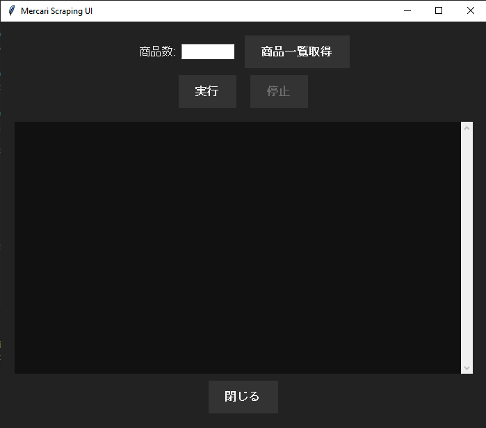
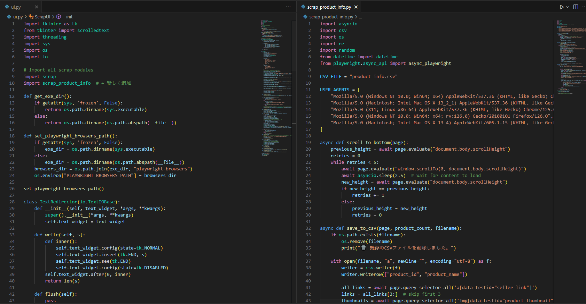

Mecari-Scraping


Mercari Shop Product Image URL Fetcher
メルカリショップに登録されている自社商品（商品コード・商品名・価格）と紐づいた商品画像URLを一括取得するツールです。 最大 25,000商品以上 のデータに対応し、取得した情報をCSV形式で出力します。
📌 機能概要
- メルカリショップの登録商品情報を取得
- 商品コード
- 商品名
- 価格
- 画像URL
- 25,000点以上の商品データにも対応
- 出力形式はCSV（UTF-8 BOM付き）
- 将来的な利用や再実行にも耐えられる安定構造
- メルカリの仕様変更にも対応しやすい構成
⚙️ 技術仕様
- 言語: Python 3.x
- ライブラリ
- requests（HTTPリクエスト送信）
- pandas（CSV作成・管理）
- beautifulsoup4（HTML解析）
- その他必要に応じてインストール
- 動作環境
- Windows / Mac / Linux
- Python 3.8 以上推奨
📂 出力フォーマット（CSV）
| 商品コード | 商品名 | 価格 | 画像URL |
|---|---|---|---|
| ABC123 | 商品A | 1500 | https://... |
| XYZ456 | 商品B | 2000 | https://... |
🚀 インストール
# 1. リポジトリをクローン
git clone https://github.com/Olaf0321/-Mercari-Scraping-.git
cd mercari-image-url-fetcher
# 2. 必要ライブラリをインストール
pip install -r requirements.txt